Digital design fundamentals
Table of Contents
- Copyright notice
- The notes below are modified copies of the academic module CS-120 "Digital Design": http://www.csd.uoc.gr/~hy120/ copies or posting are not made or distributed for profit or commercial advantage.
http://www.csd.uoc.gr/~hy120/16f/copyright.html
1 Basic logic components
1.1 SPDT switches
Switches which have 3 pins (1 input, 2 output).
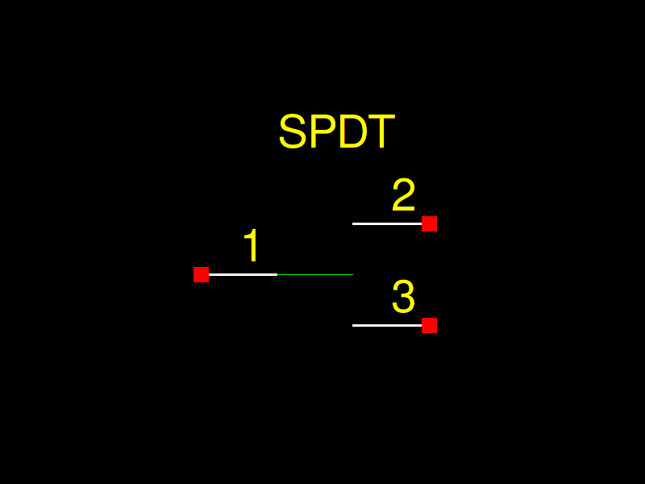
Figure 1: SPDT switch
1.1.1 Odd Parity
Odd parity is the exclusive OR (XOR).
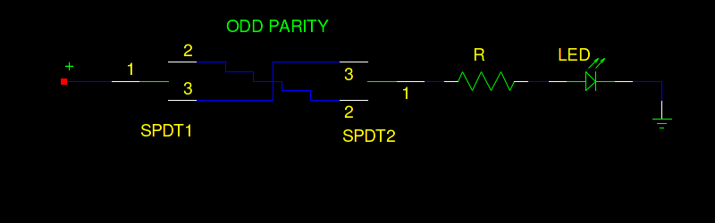
Figure 2: Odd parity
1.1.2 Even Parity
Even parity is the equality check.
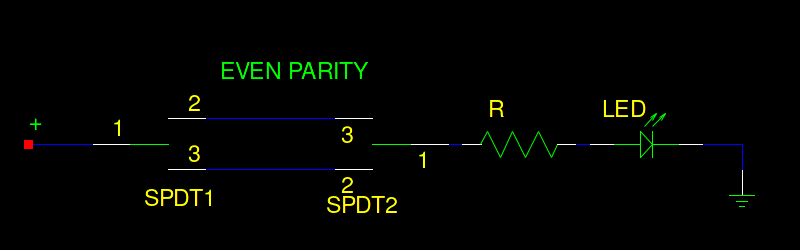
Figure 3: Even parity
1.2 Relays
Switches which can be used as memory. The relay below has a DPDT switch (double SPDT) and a coil. If the coil is activated (pins: 1, 8) the DPDT switch moves from its default state (input pins: 3, 6 to output pins: 2, 7) to the active state (input pins: 3, 6 to output pins: 4, 5). Relay have been used as basic memory components or mechanical clocks.
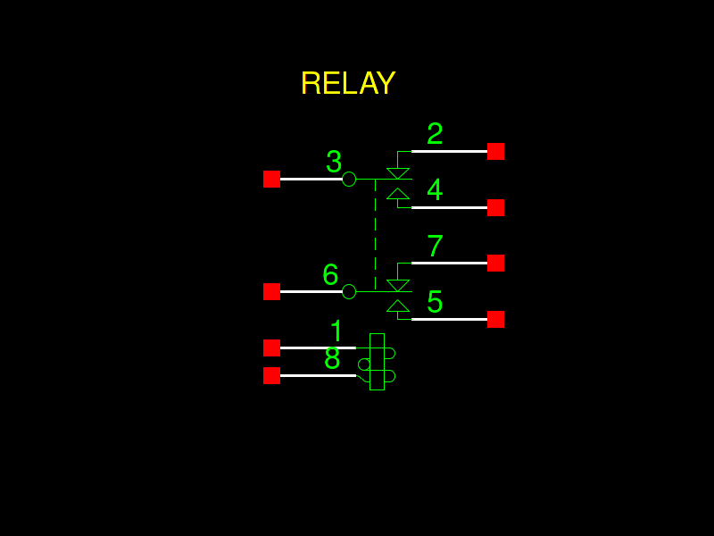
Figure 4: Relay
1.2.1 Relay 2-to-4
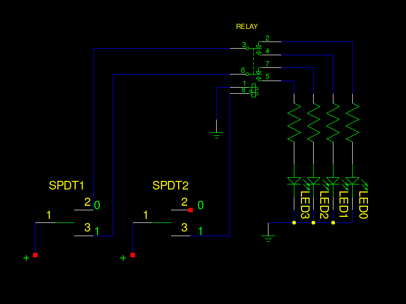
1.3 Truth tables of logic gates
1.3.1 NOT
| INPUT | OUTPUT |
|---|---|
| A | NOT A |
| 0 | 1 |
| 1 | 0 |

1.3.2 AND
| INPUT | INPUT | OUTPUT |
|---|---|---|
| A | B | A AND B |
| 0 | 0 | 0 |
| 0 | 1 | 0 |
| 1 | 0 | 0 |
| 1 | 1 | 1 |

By Inductiveload - Own work, Public Domain, Link
1.3.3 OR
| INPUT | INPUT | OUTPUT |
|---|---|---|
| A | B | A OR B |
| 0 | 0 | 0 |
| 0 | 1 | 1 |
| 1 | 0 | 1 |
| 1 | 1 | 1 |

By Inductiveload - Own work, Public Domain, Link
1.3.4 XOR
| INPUT | INPUT | OUTPUT |
|---|---|---|
| A | B | A XOR B |
| 0 | 0 | 0 |
| 0 | 1 | 1 |
| 1 | 0 | 1 |
| 1 | 1 | 0 |

By jjbeard - Own Drawing, made in Inkscape 0.43, Public Domain, Link
1.3.5 NOR
| INPUT | INPUT | OUTPUT |
|---|---|---|
| A | B | A NOR B |
| 0 | 0 | 1 |
| 0 | 1 | 0 |
| 1 | 0 | 0 |
| 1 | 1 | 0 |

By Inductiveload - Own work, Public Domain, Link
1.3.6 XNOR
XNOR is the logical equality.
| INPUT | INPUT | OUTPUT |
|---|---|---|
| A | B | A NOR B |
| 0 | 0 | 1 |
| 0 | 1 | 0 |
| 1 | 0 | 0 |
| 1 | 1 | 1 |

2 Decoder 2-to-4

3 Multiplexer 4-to-1
Multiplexer 4-to-1 using a decoder 2-to-4.
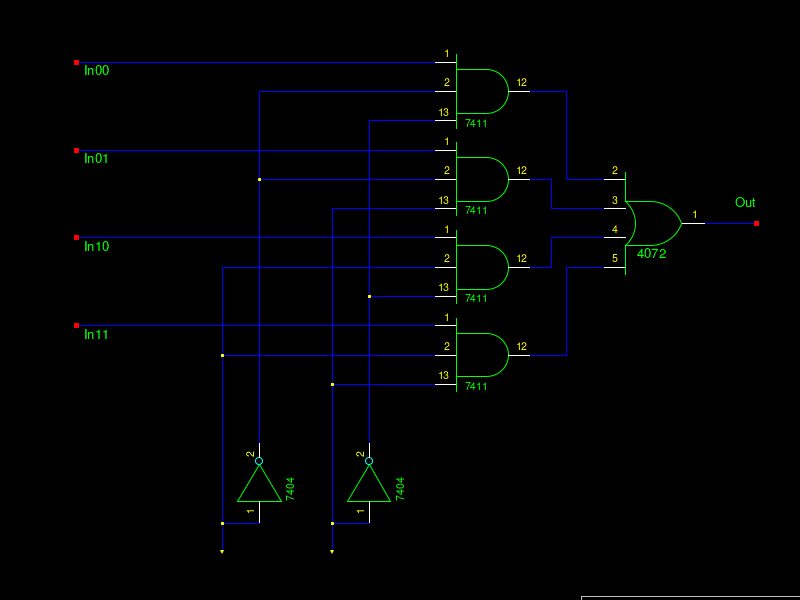
A multiplexer's module below.

By en:User:Cburnett - Own work
This vector image was created with Inkscape., CC BY-SA 3.0, Link
{kind=link}
4 Encoding
4.1 Seven segment display

By user:h2g2bob - Own work using Inkscape, CC BY-SA 3.0, Link
4.1.1 Combiner circuit and truth table
How to print numbers 0-3 to 7-segment alphanumeric display.
- You need only 2 bits to display numbers 0-3 using binary numbers
- Check which LEDs should be switched on (value = 1, ie. logical TRUE) to display number 0
- Repeat for all numbers
| In0 | In1 | - | A | B | C | D | E | F | G |
|---|---|---|---|---|---|---|---|---|---|
| 0 | 0 | 1 | 1 | 1 | 1 | 1 | 1 | 0 | |
| 0 | 1 | 0 | 1 | 1 | 0 | 0 | 0 | 0 | |
| 1 | 0 | 1 | 1 | 0 | 1 | 1 | 0 | 1 | |
| 1 | 1 | 1 | 1 | 1 | 1 | 0 | 0 | 1 |
- How to make the logical functions
- Express using basic logic operations (AND, NOT, OR) the output (7-segments) based on the input (2-bits)
| A = NOT( In0' ⋅ In1 ) |
| B = 1 |
| C = NOT( In0 ⋅ In1' ) |
| D = A |
| E = In1' |
| F = In0' ⋅ In1' |
| G = In0 |
5 2s complement
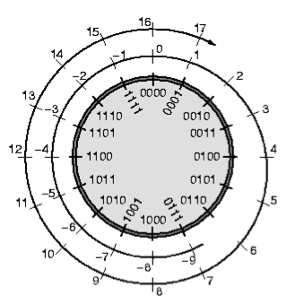
6 Half-Adder and Full-Adder
7 Latch
8 Register
8.1 Shift register
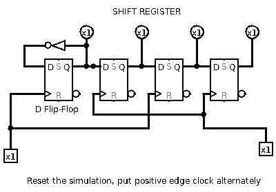
8.2 Master-slave register
The basic memory component. Below master-slave register activated by positive edge clock.
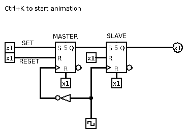
9 Sequential circuits
9.1 Counter
9.2 Finite state machine (FSM)
FSM for adaptive control of traffic lights.
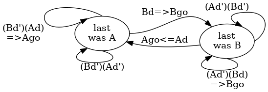
| S | Ad | Bd | Ago | Bgo | nS | ||
|---|---|---|---|---|---|---|---|
| 0 | 0 | 0 | 0 | 0 | 0 | ||
| 0 | 0 | 1 | 0 | 1 | 1 | ||
| 0 | 1 | 0 | 1 | 0 | 0 | ||
| 0 | 1 | 1 | 0 | 1 | 1 | ||
| 1 | 0 | 0 | 0 | 0 | 1 | ||
| 1 | 0 | 1 | 0 | 1 | 1 | ||
| 1 | 1 | 0 | 1 | 0 | 0 | ||
| 1 | 1 | 1 | 1 | 0 | 0 |
- Ago = Ad · [ S + (S')·(Bd') ]
- Bgo = Bd · [ S' + (S)·(Ad') ]
- nS = S · Ad' + S' · Bd
9.3 Arithmetic Logic Unit (ALU)
A basic component which can do multiple functions, like addition, subtraction, logical AND etc.
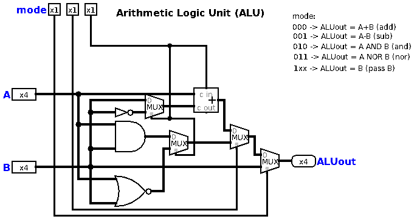
| mode: | ||||
| 000 | ALUout | A+B | (add) | |
| 001 | ALUout | A-B | (sub) | |
| 010 | ALUout | A AND B | (and) | |
| 011 | ALUout | NOT (A OR B) | (nor) | |
| 1xx | ALUout | B | (passB) |